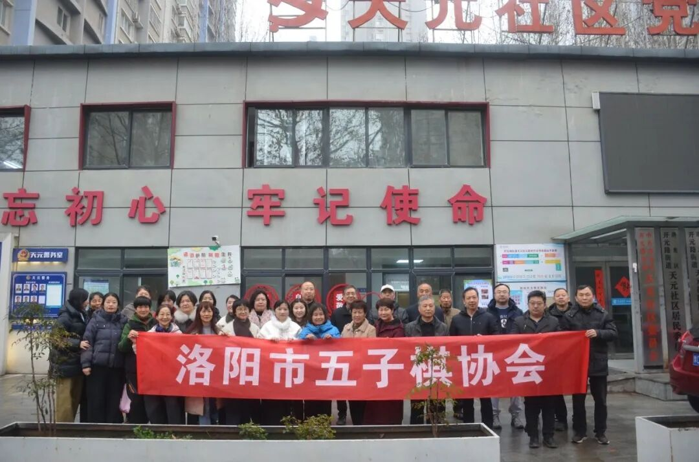
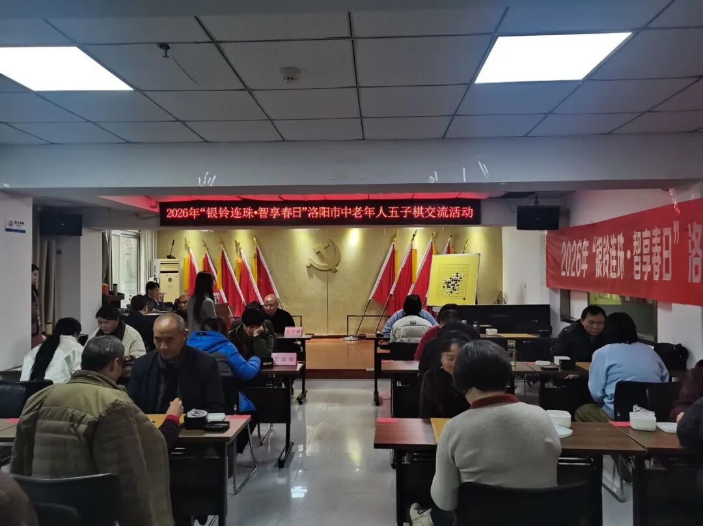
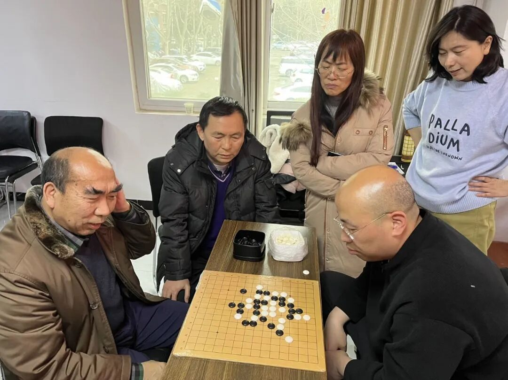
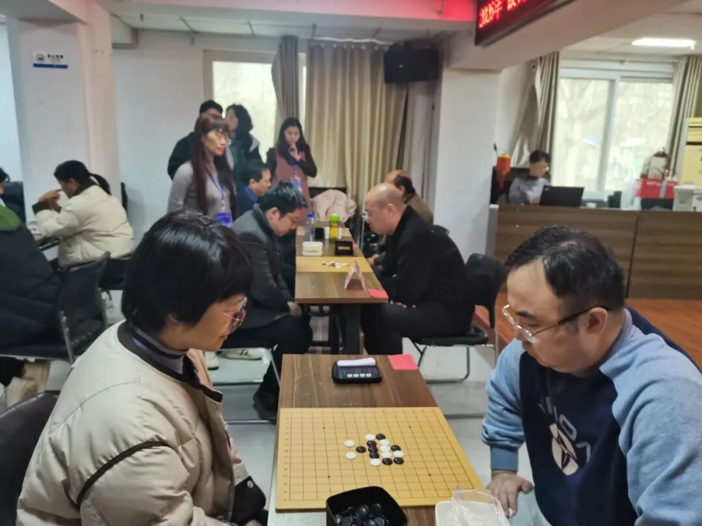
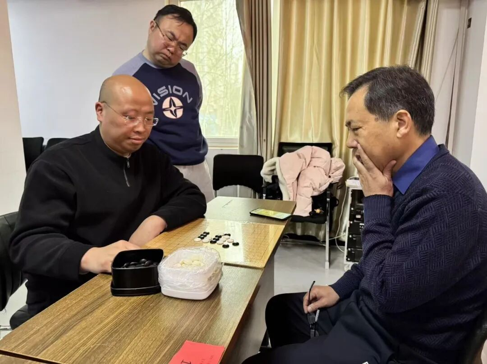
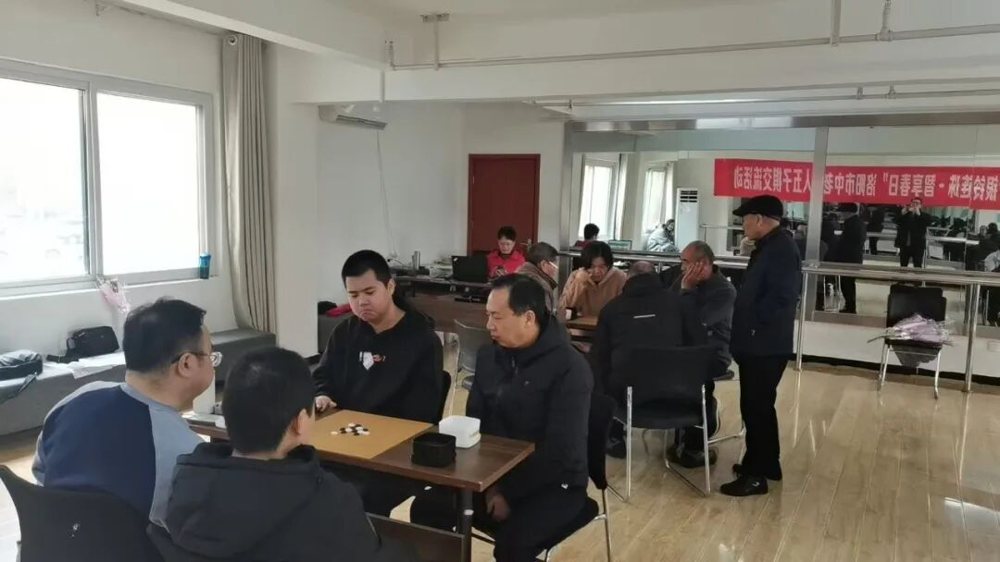
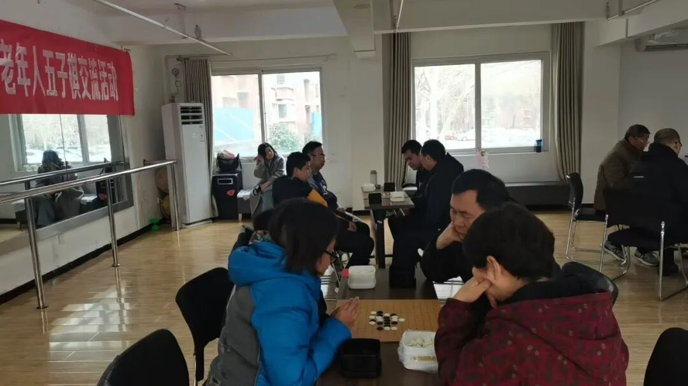
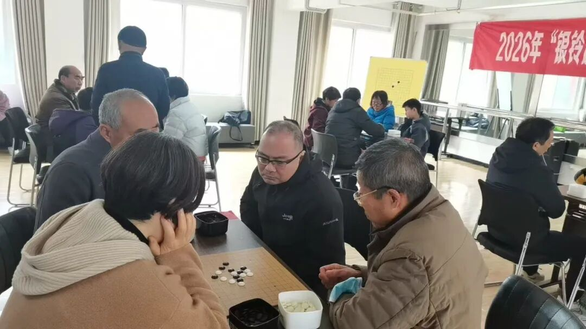
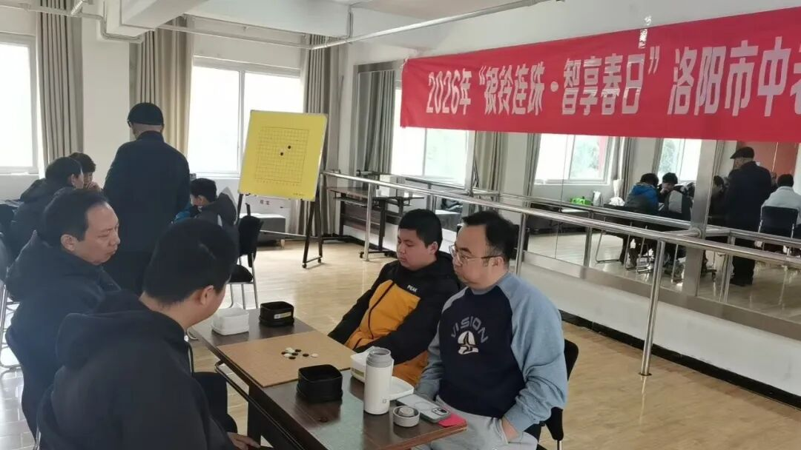

新春开枰，佳节联棋
2026年度洛阳五子棋棋王海选赛天元站收官
3月7日，新春佳节体育大拜年活动期间，2026年度洛阳五子棋棋王海选赛第二站在洛阳市洛龙区天元社区党群活动中心成功举办。本次活动由洛阳市五子棋协会主办，协会会长单位洛阳市新佳文化传播有限公司给予鼎力支助，吸引了来自社会各界的众多五子棋爱好者积极参与——距上一站晖福堂站，仅隔两周。

赛事活动分公开组和无级组，同时同场展开角逐。

公开组：赵严登顶，老将压阵
河南省棋类协会五子棋实力派棋手亲临助兴，参加公开竞技，为天元站棋王海选赛添彩增辉。比赛期间，赵严老师还利用比赛间隙与棋友交流指导五子棋实战技法，在大棋盘前为参赛棋手复盘精彩对局，深入讲解取胜技法，在场棋友受益匪浅，现场互动氛围热烈。

经过一天的紧张较量，公开组个人赛冠军自然轻松愉快地落入赵严老师囊中。洛阳老将、新晋初段棋士辛仲庙老师座实亚魁，一级棋士廖汉娇女士勇收季军。
- 🥇冠军：赵严
- 🥈亚军：辛仲庙
- 🥉季军：廖汉娇

无级组：潘为民夺魁
无级组赛事，前三名分别由潘为民、赵君会、何石婷荣获。
- 🥇第一名：潘为民
- 🥈第二名：赵君会
- 🥉第三名：何石婷

庆“三八”：跨省搭档的“潘乔联队”
新春佳节又逢“三八”国际妇女节。基于洛阳五子棋运动项目女性参与率高、成绩突出之特点，洛阳市五子棋协会精心策划了一场别开生面的庆“三八”五子棋双人联棋赛，以独特的对弈形式与棋友们共度佳节。
本次双人联棋赛打破了传统五子棋单人对弈模式，采用双人组队、交替落子的规则，既考验棋手个人功底，更注重团队默契与战术协同。赛场上，选手们凝神静思、配合默契，时而缜密布局，时而巧妙攻防，在方寸棋盘间展开激烈的智力角逐。


赛事结果：潘冠臣（二段）与乔仕鑫（三级棋士）跨省搭档的“潘乔联队”配合默契，勇夺冠军；“唐风新韵队”唐碧（三级棋士）、辛仲庙（初段棋士）组合荣获亚军；李雪琳、王韵熙组成的“瀛洲队”收获第三名。
- 🥇第一名：潘冠臣、乔仕鑫（潘乔联队）
- 🥈第二名：唐碧、辛仲庙（唐风新韵队）
- 🥉第三名：李雪琳、王韵熙（瀛洲队）


赛事活动中，参赛选手们纷纷表示，双人联棋形式新颖有趣，不仅能在对弈中切磋棋艺、提升水平，更能在协作中增进友谊、收获快乐。
春风送暖，棋韵飘香。本次赛事的成功举办，不仅为洛阳五子棋爱好者搭建了竞技交流的平台，更通过创新赛制与节日融合，展现了五子棋运动的独特魅力，推动了棋类文化在基层社区的传播与发展。